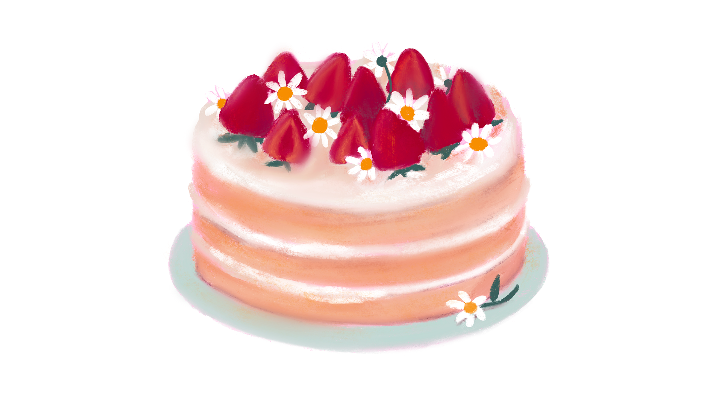

The Simple Cake

Description
A cake is a baked dessert that comes in many
different shapes, sizes, and flavors. Typically, it is
made of flour, sugar, eggs, and butter or oil, which
are mixed together to form a batter. The batter is
then baked in an oven until it rises and becomes
golden brown. Cakes can be plain or filled with
layers of frosting, fruit, or other ingredients.
The frosting can be buttercream, cream cheese,
whipped cream, or other types of frosting, and
can be flavored with chocolate, vanilla, fruit, or
other flavors. Cakes can be decorated with frosting,
fruit, sprinkles, or other decorations to make them
look festive and delicious. Whether it's a birthday
cake, a wedding cake, or a simple coffee cake, cakes
are a sweet treat that are enjoyed by people of all
ages and are often served at celebrations and special
occasions.
Ingredients
- 2 cups all-purpose flour
- 2 teaspoons baking powder
- 1/2 teaspoon salt
- 1/2 cup unsalted butter, softened
- 1 cup granulated sugar
- 2 large eggs
- 1 teaspoon vanilla extract
- 1 cup milk
Steps
- Preheat the oven to 350°F (175°C) and grease a 9-inch (23cm) cake pan.
- In a medium bowl, whisk together the flour, baking powder, and salt.
- In a large bowl, beat the butter and sugar together until light and fluffy.
- Add the eggs one at a time, beating well after each addition.
- Stir in the vanilla extract.
- Add the flour mixture to the butter mixture alternately with the milk, beginning and ending with the flour mixture.
- Pour the batter into the prepared pan and smooth the top with a spatula.
- Bake for 25-30 minutes or until a toothpick inserted into the center of the cake comes out clean.
- Let the cake cool in the pan for 10 minutes before removing it to a wire rack to cool completely.
- Frost and decorate the cake as desired.
- Serve and enjoy your delicious vanilla cake!